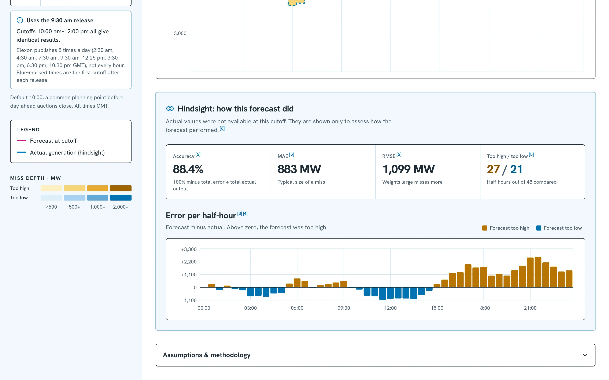

dahptd
How reliable is tomorrow's wind forecast?
GB wind · January 2026 pilot
Part 1 · Pilot walkthroughPart 2 · Technical review
Buy before delivery. Use only what was known.
1 · The decision
Different auctions. Different deadlines.
1 · The decision
| Auction · D−1 | Gate / window | Results |
|---|
| EPEX SPOT GB · 60-minute energy | 09:20 GMT | From 09:30 GMT |
| N2EX · day-ahead energy | 09:50 GMT / 10:50 CET | By 10:00 GMT / 11:00 CET |
| EPEX SPOT GB · 30-minute energy | 15:30 GMT · 3:30 pm | From 15:45 GMT |
| Nemo Link · interconnector capacity | 09:00–09:30 CET window | Separate capacity product |
January timings: Nemo's window is 08:00–08:30 GMT. “30-minute” means delivery granularity, not auction duration.
Sources: EPEX trading brochure · Nord Pool N2EX · Nemo Link. Check operator calendars for other dates and daylight-saving conventions.
1The forecast available at your cutoff
2 · Daily view
Delivery Fri 16 Jan · cutoff 10:00 Thu 15 Jan
10:00 is after morning energy gates, before the 15:30 auction. At 09:00: use the 07:30 run.
- 1
Choose a cutoffDay before delivery.
- 2
Blue dots: new releasesFirst selectable hour after publication.
- 3
One timestamped runLatest release at or before cutoff.
- 4
Magenta: forecastHour by hour.
2Compare forecast with actual output
2 · Daily view

Show actuals
2,000+ MW too high
Blue = too low
Same day, same 09:30 forecast
- 1
Actuals are hindsightNot known at decision time.
- 2
Shading shows the gapEvery half-hour.
- 3
Amber: high · blue: lowStronger shade = bigger error. Fixed scale.
- 4
88.4% accuracy27 half-hours high · 21 low.
3January: a consistent overforecast
3 · Monthly view
84%of half-hours forecast too high
+1,840 MWaverage error · 16% of actual output
81.6%month accuracy · 28 of 31 days ran high on average
Best and worst days
3 · Monthly view
28 Janworst day · 6.7% accuracy
20 Janbest day · 93.5% accuracy
dahptd
Technical review
Architecture · Data · Method · Tests
Part 2 · Technical review
Two services. One data snapshot.
Architecture
Server shell. Client-side data.
Rendering & API
React rendering
Server Components: layout and route wrappers.
Client Components: dashboard state, controls and charts.
Suspense: boundary for useSearchParams(), not API loading.
No server-side forecast fetch or Server Actions.
Browser request flow
URL date / cutoff → useEffect → fetch → JSON → React state.
/api/forecast?delivery_date=2026-01-16&cutoff=10:00
/api/monthly?cutoff=10:00
15-second timeout · abort superseded requests · retry on error.
Previous result stays visible while the next loads.
Same-origin requests: Vercel routes to FastAPI in production; Next.js proxies locally.
Bundled data, reproducible results
Data
Elexon BMRS API
WINDFOR, every published run.
FUELHH, fuelType WIND.
stream endpointsscripts/download_data.py
- Download + deduplicate
- Validate coverage
- Record sources + SHA-256
backend/data/elexon/
Read-only snapshot, shipped with the app.
18,272hourly forecast records, every release 31 Dec – 31 Jan
1,536half-hourly actuals, 1 Jan – 1 Feb, complete
~110 KBgzipped; refresh = run, commit, redeploy
Read-only data. Per-process caches.
Backend lifecycle
Load and calculate
FastAPI validates the date range and cutoff format.
First analysis access decompresses bundled JSON into Python dictionaries.
Forecast index: publication → target hour → MW.
Actuals index: half-hour timestamp → MW.
Select one forecast run, align intervals, calculate scores, return JSON.
functools.lru_cache
Dataset + manifest: one cached value each.
Daily responses: up to 64 date/cutoff pairs.
Monthly responses: up to 32 cutoffs.
24-cutoff monthly comparison: one cached result.
No database, shared cache, or live ingestion.
Caches are disposable: cold starts / new workers rebuild them. Refresh the snapshot and redeploy to update data.
Where the logic lives
Codebase
backend/
app/main.py HTTP, input validation
app/analysis.py selection, alignment, metrics
scripts/download_data.py snapshot refresh
data/elexon/ gz data + manifest
tests/ pytest
frontend/app/
forecast-page.tsx daily view
forecast-chart.tsx contour + error charts
forecast-data.ts types, URL state, format
monthly/ page, charts, data
sheet.tsx shared shell, cutoff grid, keys
globals.css light + dark theme tokens
frontend/tests/ pure-logic tests
Start here: analysis.py → main.py → forecast-data.ts → forecast-page.tsx
Checks and limitations
Practices
GitHub Actions, every push and pull request
Backenduv syncruff checkruff formatpytest · 14
Frontendeslintbun test · 24typechecknext build
Pinned tools · frozen lockfiles · Docker
Checksummed data · per-instance cache
Light and dark themes
Limitations: not live · one month only · WINDFOR interval semantics need publisher confirmation.
dahptd
Thank you
dahptd.vercel.app
github.com/anandrajaram21/dahptd